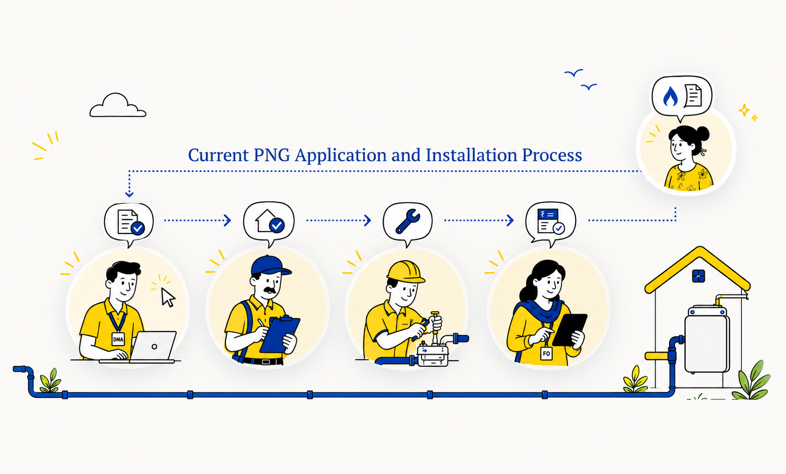
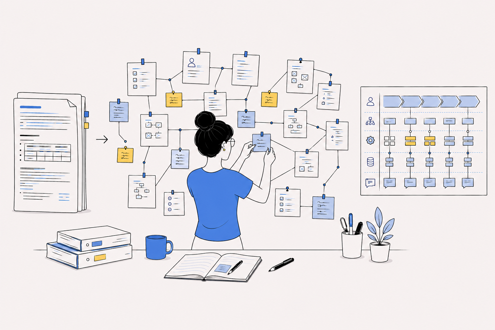
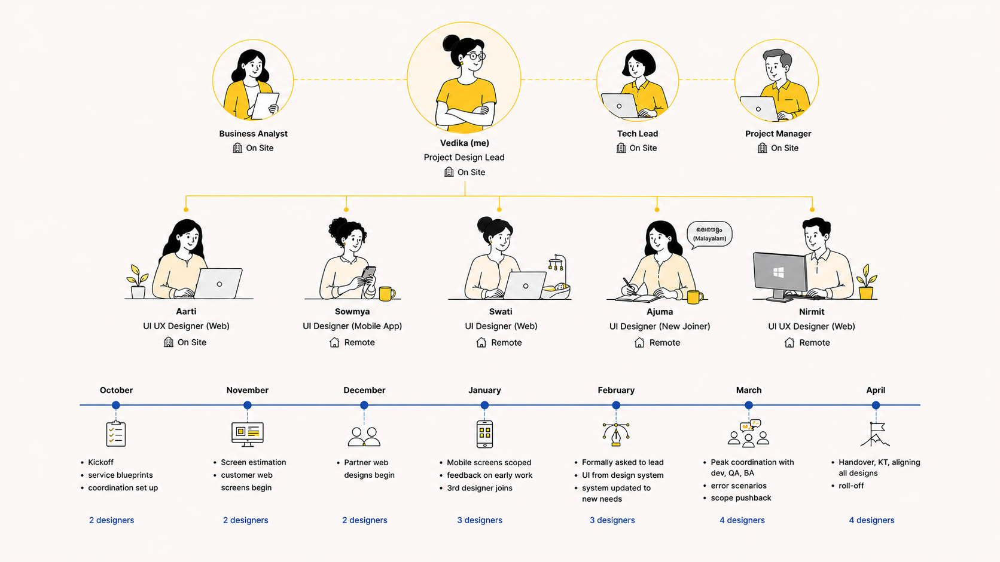
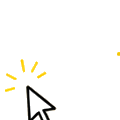
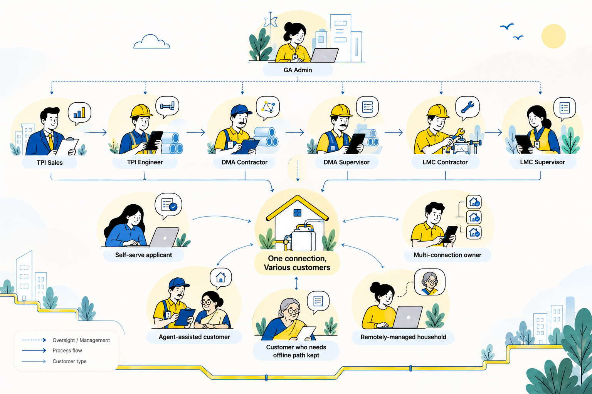

Disclaimer. To comply with my non-disclosure agreement, I’ve omitted confidential information and disguised the client’s name. The insights shared here are my own and don’t necessarily represent the views of the client.
01
Overview
Problem
Getting piped gas meant one application passing through five roles, entirely offline. Nobody in the chain could see the whole picture.
Approach
Turned the BRD into to-be service blueprints, mapped current against to-be flows, then designed one connected web and app system for customers and partners.
Outcome
Every module was signed off by the client. Registration and the admin dashboard reached dev completion before the project was put on hold.
02
Business problem
Piped natural gas reaches a home through a chain, not a transaction. Before gas ever flows, a single application passes through five different roles.

{{ z.name }}
{{ z.name }}
{{ z.desc }}
Hover or tap each role to see what they do.
For DPCL’s piped-gas expansion into tier 2 and 3 cities, every one of those handoffs happened offline: over phone calls, in local offices, and with hard-copy documents walked from desk to desk. The official process time was 2–4 weeks. But because nothing was connected, no one in the chain could see the whole picture.
It was an ecosystem that had to be thought through as a whole: customers who may never have filled in a form online, agents enrolling on their behalf, inspectors and installers coordinating physical work, and admins managing all of it across geographies. The redesign had to hold all of it at once.
03
Design challenge
The brief was to replace the offline process with one connected digital system. The harder, unspoken part was doing it for the people the offline process actually served, in places where bandwidth and digital literacy can’t be assumed.

How might we
…make [process] simple and transparent for [users] while keeping [constraint] intact?
Three goals shaped everything
- 01
Connect the five-role chain
Give the whole approval process a single digital backbone, so no handoff happens blind.
- 02
Let people in, whichever way they arrive
Let a customer start, save and track an application themselves, or hand it to an agent.
- 03
Fit the real context
Keep the whole thing usable in low-bandwidth, low-literacy conditions.
04
My role
Project Design Lead, owning the service design layer and leading a team of five designers. Most of my hands-on work sat on the layer that held the project together, and most of my time went into coordination: clarifying requirements and timelines with the business analyst (BA), and prioritising delivery with the dev manager as priorities shifted and deadlines tightened.


- {{ it }}
{{ z.team }}
Hover or tap a month to see what happened.
What I owned end to end
- The service design layer: end-to-end journeys and user flow documentation
- The team’s daily coordination logs
- Design QA reviews with developers
- The full customer registration flow, plus parts of partner and admin flows
05
Work and approach
Step {{ a.n }}
{{ a.title }}
{{ a.text }}
06
The users
The core design tension wasn’t a screen. It was that “the customer” was never one person. Working from the business requirements and the team’s open-questions board, we designed deliberately for the real range.

{{ z.name }}
{{ z.desc }}
Hover or tap anyone in the ecosystem.
Customers
Other users in the ecosystem
07
Noteworthy recommendations
I’ve kept the attribution honest below. Some calls I originated, some I pushed back on, and some were business rules I had to make humane. The interesting part is usually what we did with each one.
{{ r.n }}
{{ r.title }}
Decision communicated to us
{{ r.before }}
What I pushed for
{{ r.after }}
{{ s.title }}
{{ s.desc }}
08
Where it stands
On holdSigned off by the client
Every module and its screens were signed off by the client, after the BA and dev reviewed and agreed. Several flows, including registration and the admin dashboard, reached dev completion.
The client had other priorities to clear first, and the project was handed over to another company’s design team after I moved on to another project.
09
Learnings
Leading means designing around your team, not just the screens
This was the first time my delivery ran largely through other people. It taught me to lean on each person’s strength: one drawn to integrating AI, one who could simplify UI beautifully, one with a strong UX base who could translate web to mobile, and one balancing early motherhood who needed flexibility to do her best work. Design leadership turned out to be resource design as much as screen design.
Coordination is the real design surface on a project like this
More of my impact came from clarifying a requirement with the BA or resequencing delivery with the dev manager than from any single screen. On a five-role ecosystem, keeping the whole thing coherent is the design work.
10
Thanks
To Aarti, Sowmya, Swati, Nirmit and Ajuma, who took decisions I’d made and turned them into real, buildable screens, often faster than the timeline had any right to expect. And to the BA and dev manager, whose pushback made the calls that stuck worth defending.
Next case study
ZMW
Automobile Company
Want to get in touch? Drop me a line
I read every message and try to reply within a couple of days.